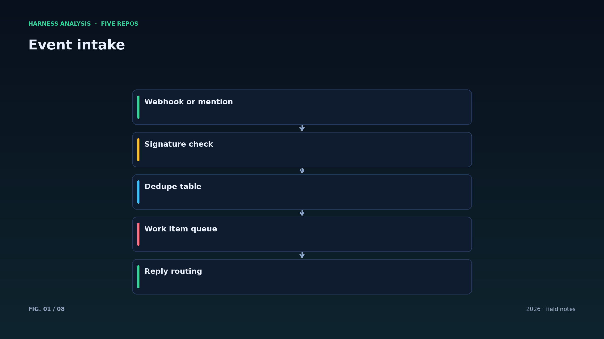
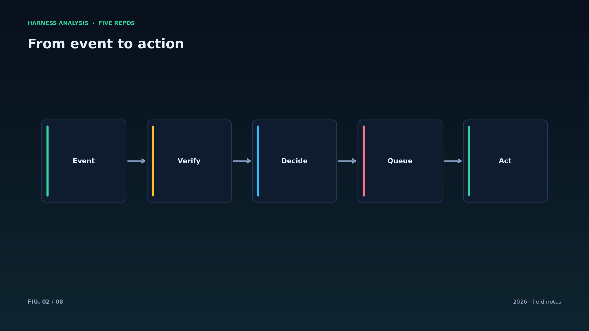
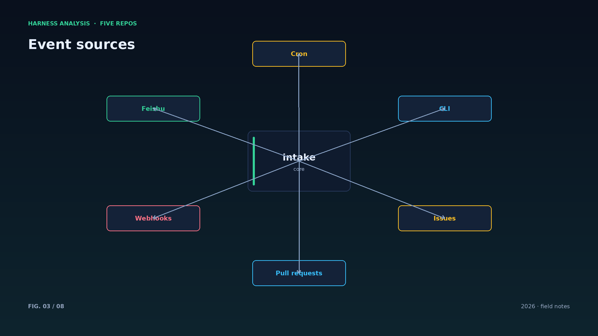
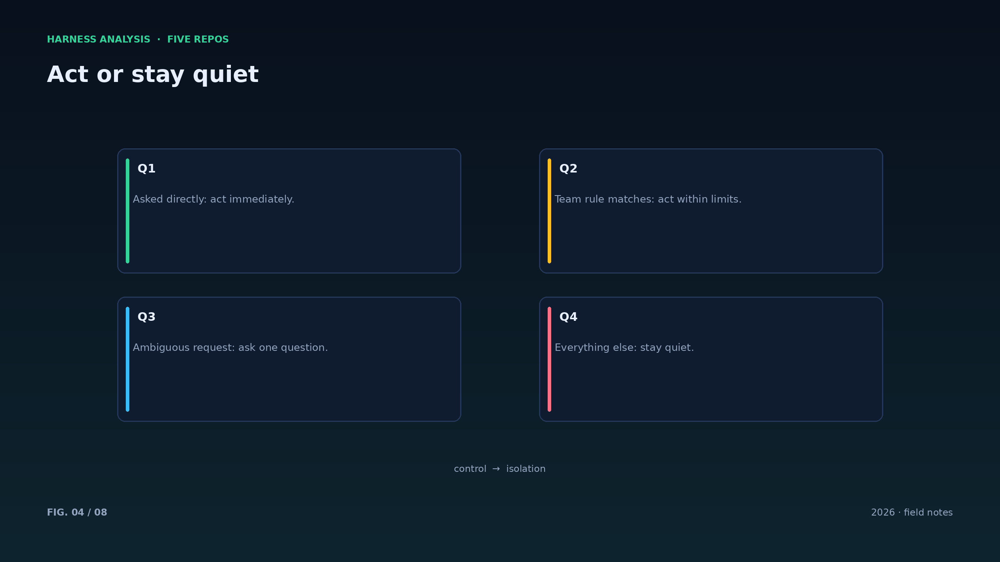
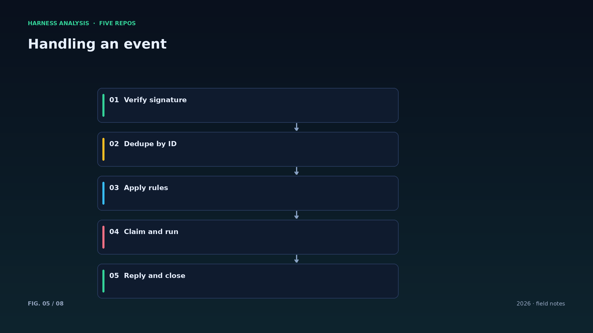
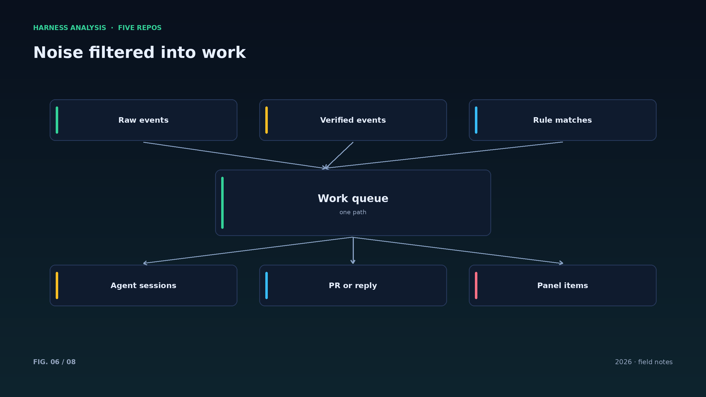
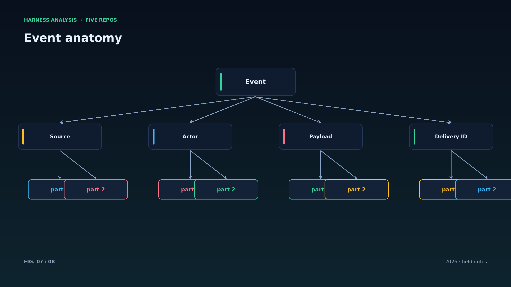
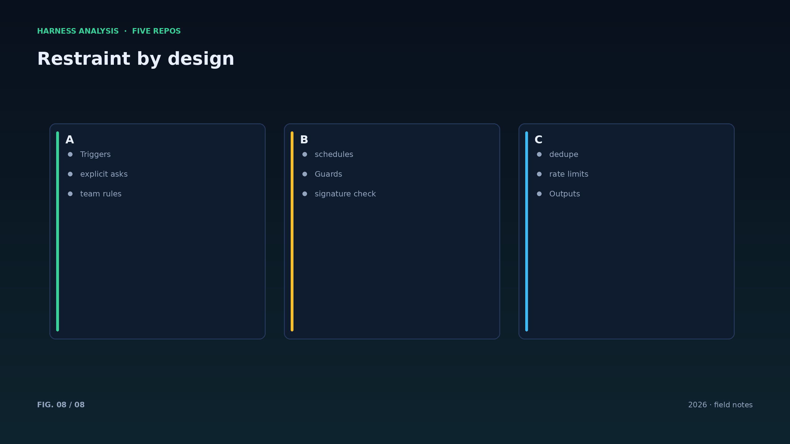

harness analysis · 08
事件驱动与克制：主动型 Agent 的分寸从哪里来
Event-driven Restraint: Where a Proactive Agent's Discipline Comes From
主动型 agent 的关键不是“自己找活干”，而是知道什么时候不该动。这一篇拆解 superagent 的触发、去重与回复闭环。
主动型 agent 的输入端是事件：GitHub 的 issue、PR 与 webhook，飞书的消息与提及，外加定时任务。事件必须先过两道闸：签名校验确认来源可信，投递 ID 去重防止重复处理。
第二道闸是规则：不是每个事件都该拉起 agent。superagent 的原则是“被要求时才行动，或团队规则允许时才行动”。这条原则把噪音挡在外面，也让 agent 的行为可预测。
工作项被领取后进入独立会话与目录，完成后回到原线程回复。web 面板列出需要人介入的事项——人只在必须决策时出现，这是产品层的克制。
工程上的三个坑：事件风暴（一次性涌入大量事件）、重复投递（GitHub 会重试）、回复错位（回到错误的线程）。对应解法是队列限流、幂等表与严格的路由字段。
事件系统的容量规划要有上限：队列积压到阈值就拒绝新事件并告警，比无限堆积然后雪崩好得多。主动型系统的第一指标是“不添乱”。
面板是产品的一部分：把“等待人决策”的事项列清楚，比给每个 agent 配一个聊天窗口更有效——人只需要一个待办列表。
事件规则建议用配置而非代码：谁可以触发、哪些标签生效、回复模板，都放在配置里，团队可以自己改。
主动型 agent 需要“静默期”：连续触发失败后自动冷却，避免在坏数据上反复行动。
最后，所有主动行为都要可撤回：PR 可以关、消息可以删、面板项可以忽略——设计时就把撤回路径想好。
Architecture figures








ENGLISH
Event-driven Restraint: Where a Proactive Agent's Discipline Comes From
The point of a proactive agent is not finding work by itself, but knowing when not to act. This piece dissects dsh-superagent's triggers, deduplication and reply loop.
Proactive agents listen to events: GitHub issues, PRs and webhooks, Feishu messages and mentions, plus scheduled jobs. Events pass two gates first: signature verification for provenance, and delivery-ID deduplication to prevent double processing.
The second gate is rules: not every event deserves an agent. dsh-superagent's principle is to act when asked, or when team rules allow it. That keeps noise out and behavior predictable.
A claimed work item runs in its own session and directory and replies in the original thread. A web panel lists items that need a human — people appear only for decisions.
Three engineering traps: event storms (a burst of events), duplicate deliveries (GitHub retries), and misrouted replies (answering the wrong thread). The answers are queue throttling, an idempotency table, and strict routing fields.
Event systems need a ceiling: reject and alert when the queue backs up, instead of stacking silently until it collapses. The first metric of a proactive system is not adding noise.
Express event rules as configuration, not code: who may trigger, which labels count, which reply template applies. Teams can then change behavior without shipping.
Proactive agents need quiet periods: cooldown after repeated failures prevents acting on bad data. And every proactive action must be retractable — a PR can close, a message can be deleted, a panel item can be dismissed.